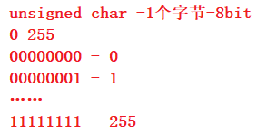

数据类型
内置类型
char //字符数据类型 short //短整型 int //整形 long //长整型 long long //更长的整形 float //单精度浮点数 double //双精度浮点数自定义类型(构造类型)
类型的意义：
- 使用这个类型开辟内存空间的大小（大小决定了使用范围）。
- 如何看待内存空间的视角。
类型的基本归类
整形家族
char
unsigned char //无符号数
signed char
short
unsigned short [int]
signed short [int] //[int] 可以省略
int
unsigned int
signed int
long
unsigned long [int]
signed long [int]
浮点数家族
float
double
构造类型
> 数组类型
> 结构体类型 struct
> 枚举类型 enum
> 联合类型 union
指针类型
int *pi;
char *pc;
float* pf;
void* pv;
空类型
void 表示空类型（无类型）
通常应用于函数的返回类型、函数的参数、指针类型。
整形在内存中的存储 limit.h
原码、反码、补码
计算机中的有符号数有三种表示方法，即原码、反码和补码。[无符号：原码、反码、补码 相同]
三种表示方法均有符号位和数值位两部分，符号位都是用0表示“正”，用1表示“负”，而数值位三种表示方法各不相同。
原码
直接将二进制按照正负数的形式翻译成二进制就可以。
反码
将原码的符号位不变，其他位依次按位取反就可以得到了。
补码
反码+1就得到补码。
正数的原、反、补码都相同。
对于整形来说：数据存放内存中其实存放的是补码。
1 - 1;
//1 + (-1)
//00000000000000000000000000000001
//11111111111111111111111111111111
//00000000000000000000000000000000
//10000000000000000000000000000001 - -1原码
//11111111111111111111111111111110 -1补码
//11111111111111111111111111111111 -反码
//00000000000000000000000000000001 - 1 原码 补码 反码
//10000000000000000000000000000001
//10000000000000000000000000000010
为什么呢？
在计算机系统中，数值一律用补码来表示和存储。 原因在于，使用补码，可以将符号位和数值域统一处理； 同时，加法和减法也可以统一处理（CPU只有加法器） 此外，补码与原码相互转换，其运算过程是相同的，不需要额外的硬件电路。
我们可以看到对于a和b分别存储的是补码。但是我们发现顺序有点不对劲。 这是又为什么？
大小端介绍
什么大端小端
大端（存储）模式，是指数据的低位保存在内存的高地址中，而数据的高位，保存在内存的低地址中；
小端（存储）模式，是指数据的低位保存在内存的低地址中，而数据的高位,，保存在内存的高地址中。
为什么有大端和小端：
这是因为在计算机系统中，我们是以字节为单位的，每个地址单元都对应着一个字节，一个字节为8bit。
但是在C语言中除了8bit的char之外，还有16bit的short型，32bit的long型（要看具体的编译器），
另外，对于位数大于8位的处理器，例如16位或者32位的处理器，由于寄存器宽度大于一个字节，
那么必然存在着一个如果将多个字节安排的问题。因此就导致了大端存储模式和小端存储模式。
例如一个 16bit 的 short 型 x ，在内存中的地址为 0x0010 ， x 的值为 0x1122 ，
那么 0x11 为高字节， 0x22 为低字节。
对于大端模式，就将 0x11 放在低地址中，即 0x0010 中， 0x22 放在高地址中，即 0x0011 中。
小端模式，刚好相反。我们常用的 X86 结构是小端模式，而 KEIL C51 则为大端模式。
很多的ARM，DSP都为小端模式。有些ARM处理器还可以由硬件来选择是大端模式还是小端模式。
百度2015年系统工程师笔试题：
请简述大端字节序和小端字节序的概念，设计一个小程序来判断当前机器的字节序。（10分）
#include <stdio.h>
int check_sys()
{
int a = 1;
return *(char*)&a;
}
//指针类型的意义：
//1. 指针类型决定了指针解引用操作符能访问几个字节：char*p; *p 访问了1个字节，int*p;*p 访问4个字节
//2. 指针类型决定了指针+1，-1，加的或者减的是几个字节；char*p; p+1,跳过一个字符，int*p; p+1,跳过一个整形-4个字节
int main()
{
printf("当前机器的字节序:%s", check_sys() == 1 ? "小端存储" : "大端存储");
return 0;
}
练习
下面程序输出什么？

char a = -1; /*10000000000000000000000000000001 11111111111111111111111111111110 11111111111111111111111111111111 11111111111111111111111111111111*/ signed char b = -1; //11111111 unsigned char c = -1; /*00000000000000000000000011111111 255*/ printf("a=%d,b=%d,c=%d", a, b, c);//-1 -1 255char a = -128; //10000000000000000000000010000000 //11111111111111111111111101111111 //11111111111111111111111110000000-补码 //10000000 //11111111111111111111111110000000-补码 // printf("%u\n", a);//4294967168 //%d - 打印十进制的有符号数字 //%u - 打印十进制的无符号数字char a = 128;//127+1，char放不下128，127+1=-128 //10000000000000000000000010000000 - -128 //11111111111111111111111101111111 //11111111111111111111111110000000-补码 //10000000 //11111111111111111111111110000000-补码 printf("%u\n", a);//4294967168 //%d - 打印十进制的有符号数字 //%u - 打印十进制的无符号数字
int i= -20; //1000000 00000000 00000000 00010100 //1111111 11111111 11111111 11101011 //1111111 11111111 11111111 11101100 - 补码 unsigned int j = 10; //0000000 00000000 00000000 00001010 - 补码 //1111111 11111111 11111111 11101100 - 补码 //0000000 00000000 00000000 00001010 - 补码 //1111111 11111111 11111111 11110110 - 结果 补码 //1111111 11111111 11111111 11110101 - 反码 //1000000 00000000 00000000 00001010 - 原码 printf("%d\n", i+j);//-10 //按照补码的形式进行运算，最后格式化成为有符号整数#include <windows.h> #include <stdio.h> int main() { unsigned int i; for (i = 9; i >= 0; i--) { printf("%u\n", i); //9 8 7 6 5 4 3 2 1 0 4294967295 4294967294 4294967293…… //死循环 Sleep(100); } return 0; }char a[1000]; int i; for (i = 0; i<1000; i++) { a[i] = -1 - i;//char的范围-128-->127 //-1 -2 -3 …… -127 -126 -125 …… -1 0 } printf("%d", strlen(a));//255#include <stdio.h> unsigned char i = 0;//0-255 int main() { for (i = 0; i <= 255; i++) { printf("hello world\n");//死循环 } return 0; }
浮点型在内存中的存储 float.h
常见的浮点数：
3.14159 1E10 浮点数家族包括： float、double、long double 类型。 浮点数表示的范围：float.h中定义
存入
根据国际标准IEEE（电气和电子工程协会） 754，任意一个二进制浮点数V可以表示成下面的形式：
(-1)^S * M * 2^E
(-1)^s表示符号位，当s=0，V为正数；当s=1，V为负数。
M表示有效数字，大于等于1，小于2。
2^E表示指数位。
//9.0
//1001.0
//(-1)^0 * 1.001 * 2^3
//(-1)^s * M * 2^E
//s - 0
//M - 1.001
//E - 3
//
//0.5
//0.1 二进制表示形式
//(-1)^0 * 1.0 * 2^-1
//S = 0
//M = 1.0
//E = -1
//E + 127【中间值】 = 126
IEEE 754规定： 对于32位的浮点数，最高的1位是符号位s，接着的8位是指数E，剩下的23位为有效数字M。
对于64位的浮点数，最高的1位是符号位S，接着的11位是指数E，剩下的52位为有效数字M。
float f = 5.5;
//5.5
//101.1
//(-1)^0 * 1.011*2^2
//(-1)^s * M *2^E
//S = 0
//M = 1.011
//E = 2
//0 10000001 01100000000000000000000
//0100 0000 1011 0000 0000 0000 0000 0000
//0x40b00000
//(-1)^0 * 1.011 * 2^2
IEEE 754对有效数字M和指数E，还有一些特别规定。 前面说过， 1≤M<2 ，也就是说，M可以写成 1.xxxxxx 的形 式，其中xxxxxx表示小数部分。
IEEE 754规定，在计算机内部保存M时，默认这个数的第一位总是1，因此可以被舍去，只保存后面的xxxxxx部分。 比如保存1.01的时候，只保存01，等到读取的时候，再把第一位的1加上去。这样做的目的，是节省1位有效数字。 以32位浮点数为例，留给M只有23位，将第一位的1舍去以后，等于可以保存24位有效数字。
至于指数E，情况就比较复杂。
首先，E为一个无符号整数（unsigned int） 这意味着，如果E为8位，它的取值范围为0~255；如果E为11位，它的 取值范围为0~2047。但是，我们知道，科学计数法中的E是可以出现负数的，所以IEEE 754规定，存入内存时E的真 实值必须再加上一个中间数，对于8位的E，这个中间数是127；对于11位的E，这个中间数是1023。比如，2^10的E 是10，所以保存成32位浮点数时，必须保存成10+127=137，即10001001。
取出
然后，指数E从内存中取出还可以再分成三种情况：
E不全为0或不全为1
这时，浮点数就采用下面的规则表示，即指数E的计算值减去127（或1023），得到真实值，再将有效数字M前 加上第一位的1。 比如： 0.5（1/2）的二进制形式为0.1，由于规定正数部分必须为1，即将小数点右移1位， 则为1.0*2^(-1)，其阶码为-1+127=126，表示为01111110，而尾数1.0去掉整数部分为0，补齐0到23位 00000000000000000000000，则其二进制表示形式为:
0 01111110 00000000000000000000000
E全为0
这时，浮点数的指数E等于1-127（或者1-1023）即为真实值， 有效数字M不再加上第一位的1，而是还原为 0.xxxxxx的小数。这样做是为了表示±0，以及接近于0的很小的数字。
//0 00000000 01100000000000000000000
//+/- 0.011 * 2^-126
//正负无穷小
E全为1
这时，如果有效数字M全为0，表示±无穷大（正负取决于符号位s）；
//0 11111111 01100000000000000000000
//E+127 = 255
//E = 128
//1.xxx * 2^128
//表示的正负无穷大的数字
例子
int main()
{
int n = 9;
//0 00000000 00000000000000000001001-补码
//
float *pFloat = (float *)&n;
printf("n的值为：%d\n", n);//9
printf("*pFloat的值为：%f\n", *pFloat);//0.000000
//(-1)^0 * 0.00000000000000000001001 * 2^-126
//
*pFloat = 9.0;
//1001.0
//1.001*2^3
//(-1)^0 *1.001 * 2^3
//01000001000100000000000000000000
printf("num的值为：%d\n", n);
printf("*pFloat的值为：%f\n", *pFloat);//9.0
return 0;
}
为什么 0x00000009 还原成浮点数，就成了 0.000000 ？
首先，将 0x00000009 拆分，得到第一位符号位s=0，后面8位的指数 E=00000000 ， 最后23位的有效数字M=000 0000 0000 0000 0000 1001。
由于指数E全为0，所以符合上一节的第二种情况。因此，浮点数V就写成：
V=(-1)^0 × 0.00000000000000000001001×2^(-126)=1.001×2^(-146)
显然，V是一个很小的接近于0的正数，所以用十进制小数表示就是0.000000。
请问浮点数9.0，如何用二进制表示？还原成十进制又是多少？
首先，浮点数9.0等于二进制的1001.0，即1.001×2^3。
那么，第一位的符号位s=0，有效数字M等于001后面再加20个0，凑满23位，指数E等于3+127=130， 即10000010。 所以，写成二进制形式，应该是s+E+M，即这个32位的二进制数，还原成十进制，正是 1091567616 。
练习
1
unsigned char a = 200;
unsigned char b = 100;
unsigned char c = 0;
c = a + b; //整形提升
//00000000000000000000000011001000 - a
//00000000000000000000000001100100 - b
//00000000000000000000000100101100
//00101100 - c
//00000000000000000000000000101100
//
//00000000000000000000000011001000
//11001000-a
//00000000000000000000000001100100
//01100100-b
printf("%d %d", a + b, c);
//300 44

练习2
unsigned int a = 0x1234;
unsigned char b = *(unsigned char *)&a;
printf("%d\n", b);//0x00
练习3
//-128 --> 127
char a[1000] = { 0 };
//
int i = 0;
for (i = 0; i<1000; i++)
{
a[i] = -1 - i;
}
//-1 -2 ... -128 127 126 125 ... 3 2 1 0 -1 -2 ...
//0结束
printf("%d\n", strlen(a));//255 // #include <string.h>
打印杨辉三角
// 1
// 1 1
// 1 2 1
// 1 3 3 1
// 1 4 6 4 1
// ................
int main()
{
int arr[10][10] = { 0 };
int i = 0;
int j = 0;
for (i = 0; i < 10; i++)
{
for (j = 0; j < 10; j++)
{
if (j == 0)
{
arr[i][j] = 1;
}
if (i == j)
{
arr[i][j] = 1;
}
if (i >= 2 && j >= 1)
{
arr[i][j] = arr[i - 1][j] + arr[i - 1][j - 1];
}
}
}
//打印
for (i = 0; i < 10; i++)
{
for (j = 0; j <=i; j++)
{
printf("%d ", arr[i][j]);
}
printf("\n");
}
return 0;
}
猜凶手
日本某地发生了一件谋杀案，警察通过排查确定杀人凶手必为4个嫌疑犯的一个。
以下为4个嫌疑犯的供词 :
A说：不是我。//0
B说：是C。 //0
C说：是D。 //0
D说：C在胡说 //1
已知3个人说了真话，1个人说的是假话。
现在请根据这些信息，写一个程序来确定到底谁是凶手
int killer = 0;
for (killer = 'a'; killer <= 'd'; killer++)
{
if ((killer != 'a') + (killer == 'c') + (killer == 'd') + (killer != 'd') == 3)
{
printf("killer = %c\n", killer);
}
}
猜名次
5位运动员参加了10米台跳水比赛，有人让他们预测比赛结果： A说：B第二，我第三。 B说：我第二，E第四。 C说：我第一，D第二。 E说：我第四，A第一； 比赛结束后，每个选手都谁对了一半，请编程确定比赛名次。
int main()
{
int a = 0;
int b = 0;
int c = 0;
int d = 0;
int e = 0;
for (a = 1; a <= 5; a++)
{
for (b = 1; b <= 5; b++)
{
for (c = 1; c <= 5; c++)
{
for (d = 1; d <= 5; d++)
{
for (e = 1; e <= 5; e++)
{
if (((b == 2) + (a == 3) == 1) &&
((b == 2) + (e == 4) == 1) &&
((c == 1) + (d == 2) == 1) &&
((c == 5) + (d == 3) == 1) &&
((e == 4) + (a == 1) == 1))
{
if (a * b * c * d * e == 120)
printf("a=%d b=%d c=%d d=%d e=%d\n", a, b, c, d, e);
}
}
}
}
}
}
return 0;
}
本页完